실험 과정에 따라 실험을 설치하세요.
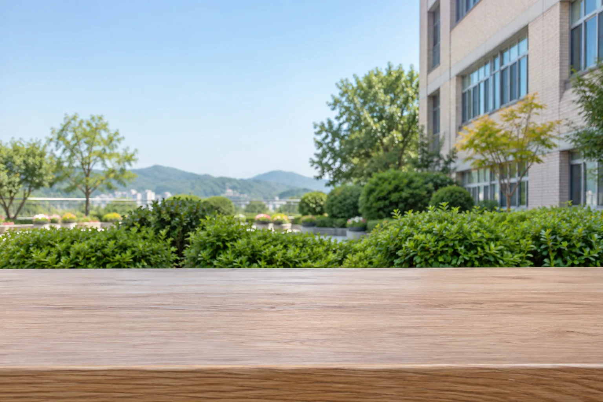
0시간 지남
김천여중 실험실
1
상추 모종 2개를 점선 자리에 놓으세요.


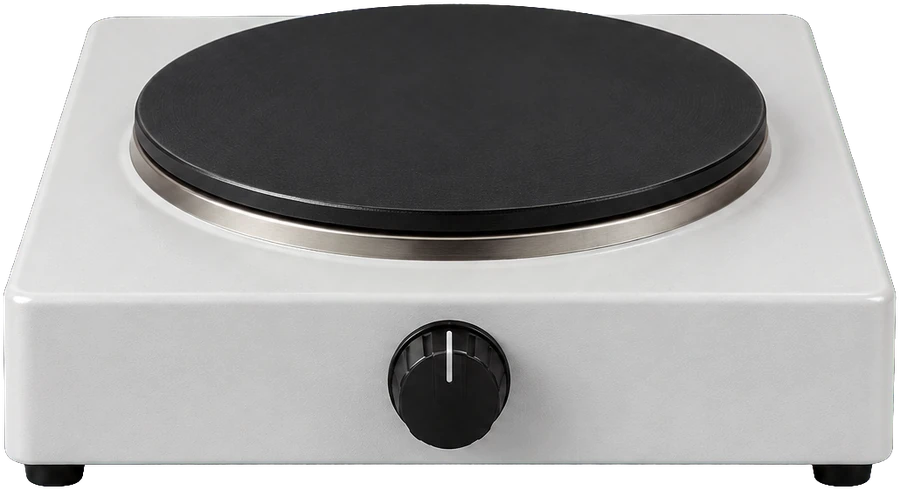
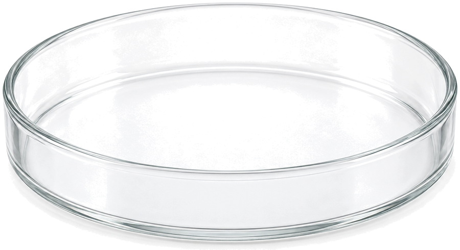
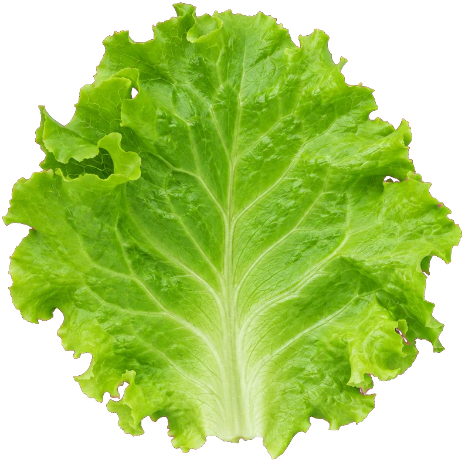
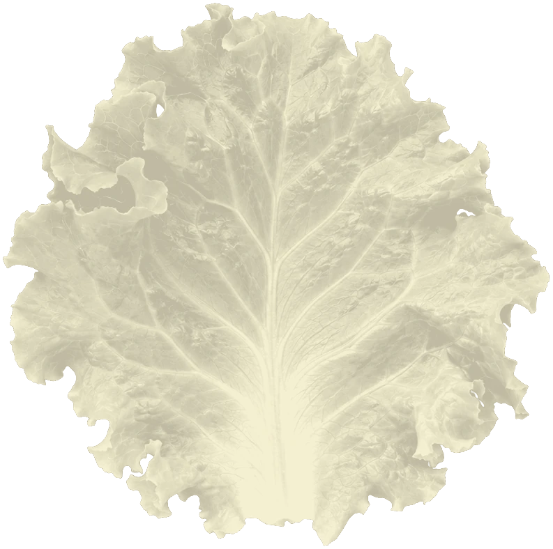
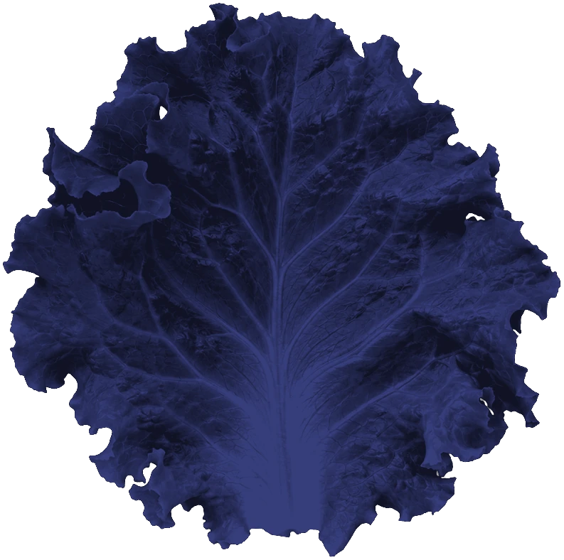
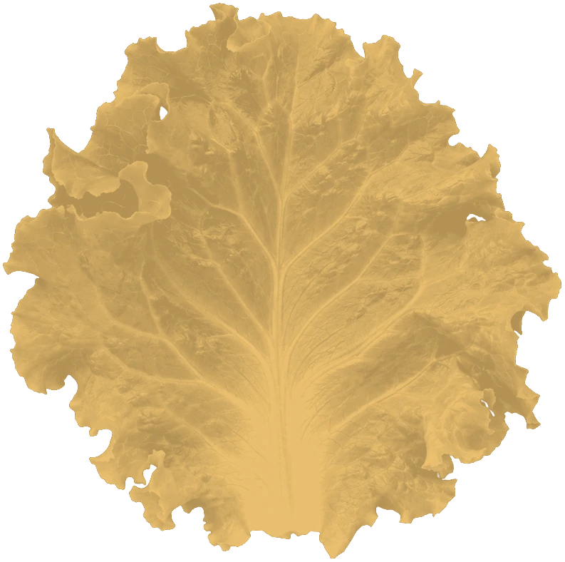
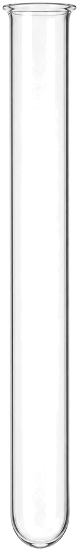
A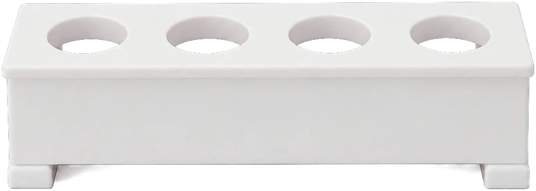
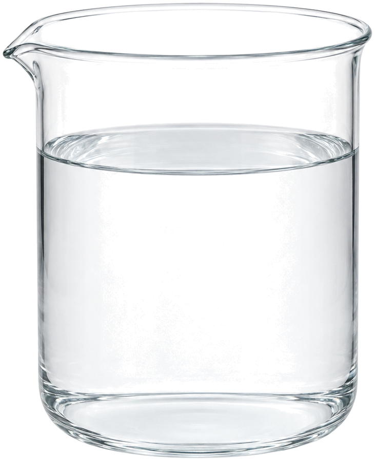
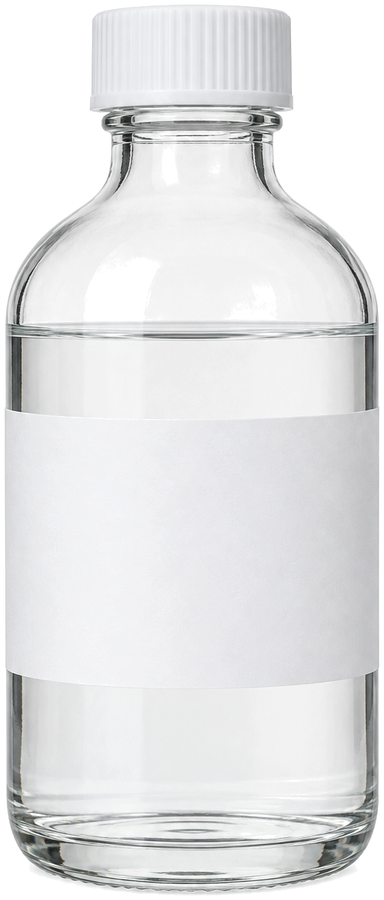
에탄올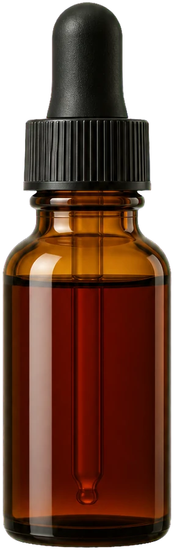
A햇빛을 받은 잎햇빛 받음
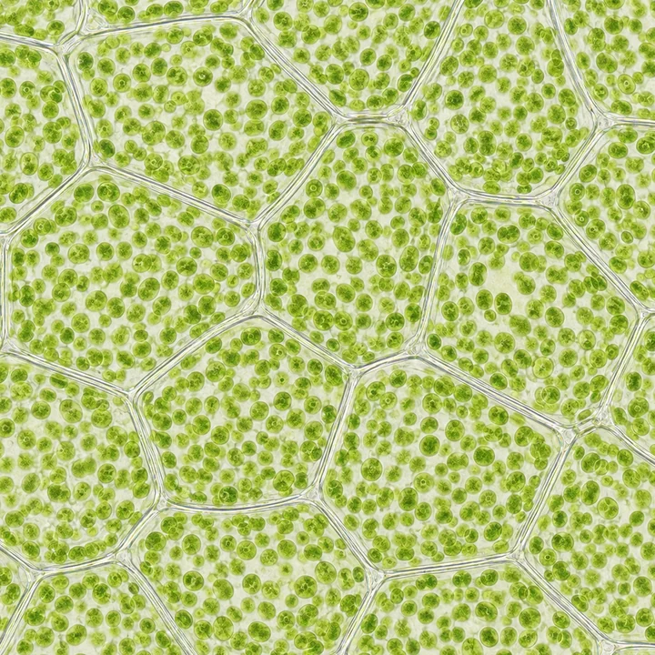
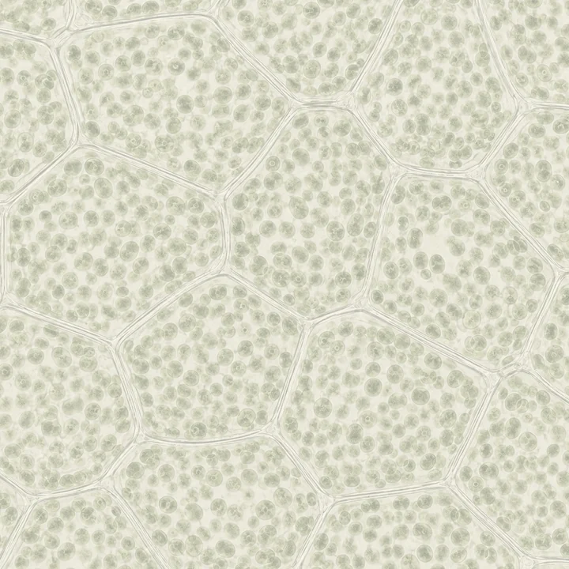
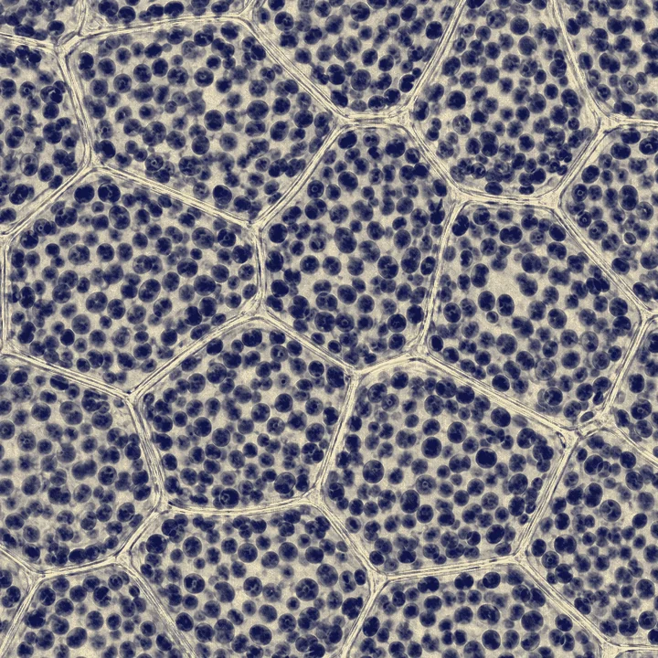
탈색 전 잎 세포
B햇빛을 받지 않은 잎햇빛 못 받음
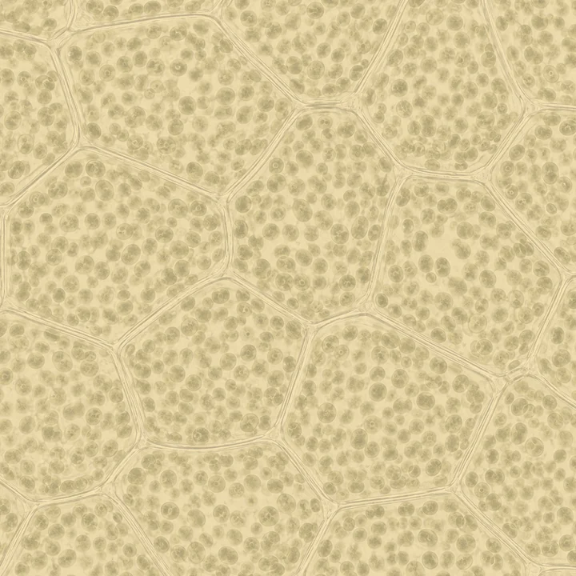
탈색 전 잎 세포
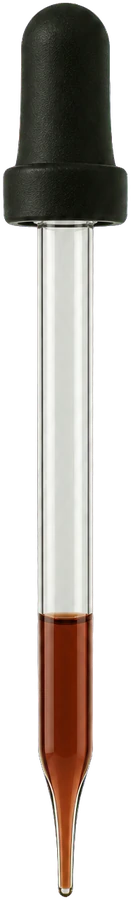
현미경 관찰 결과
탈색한 잎 조각에 아이오딘-아이오딘화 칼륨 용액을 떨어뜨린 뒤 현미경으로 관찰한 모습입니다.
관찰 결과
탐구 결과 정리
★ 미리 알아두기 아이오딘-아이오딘화 칼륨 용액은 과(와) 반응하면 청람색으로 변한다.
탐구를 바탕으로 알 수 있는 사실
아이오딘-아이오딘화 칼륨 용액을 떨어뜨리면
()
에서만 청람색으로 변한다.
탐구 결론
광합성 산물은 이고, 포도당은 로 바뀐다.
흐린 글씨를 따라 입력하면 진하게 바뀝니다.